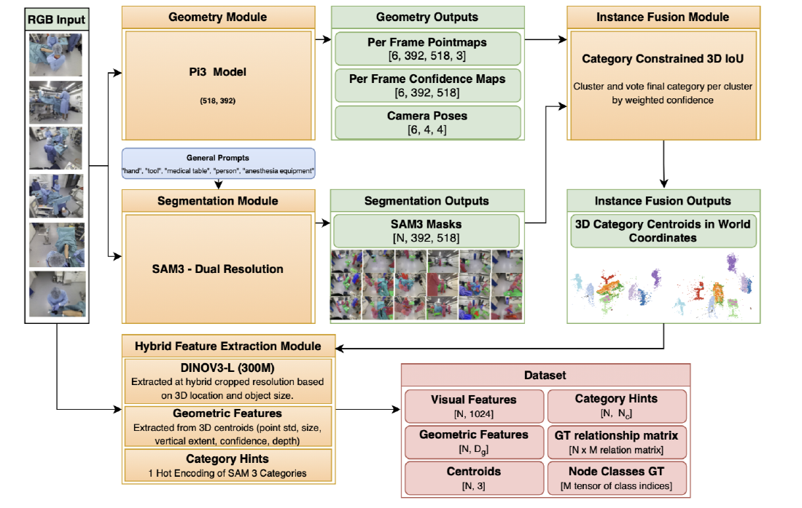
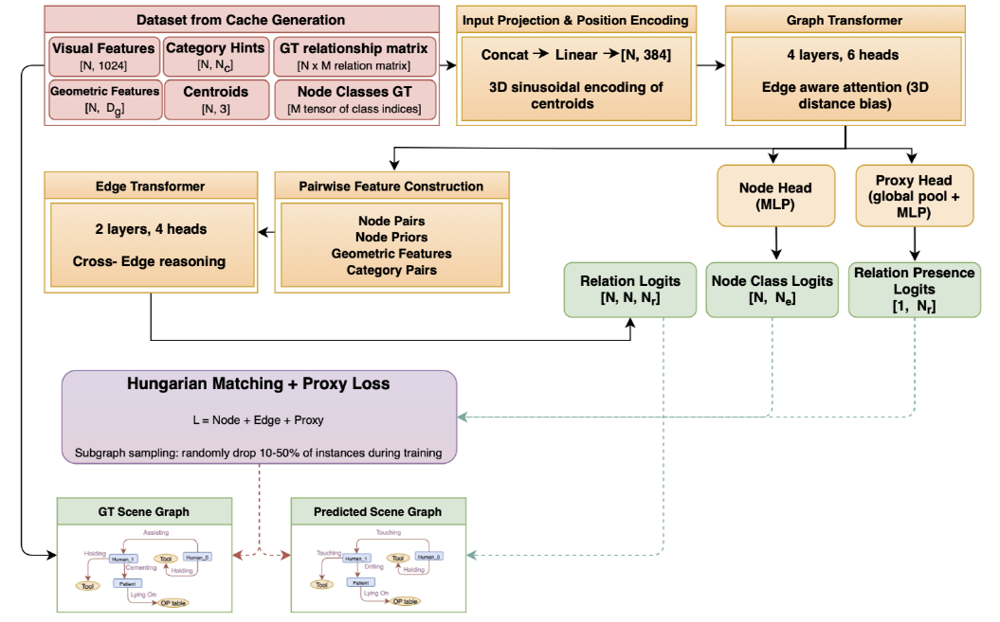
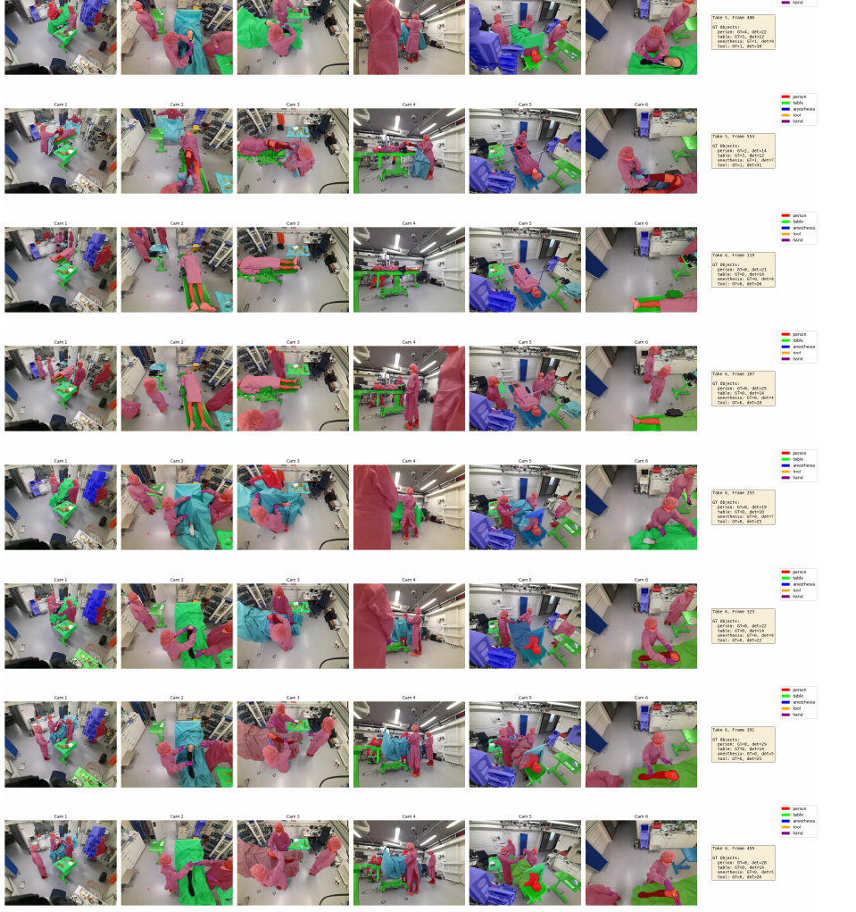
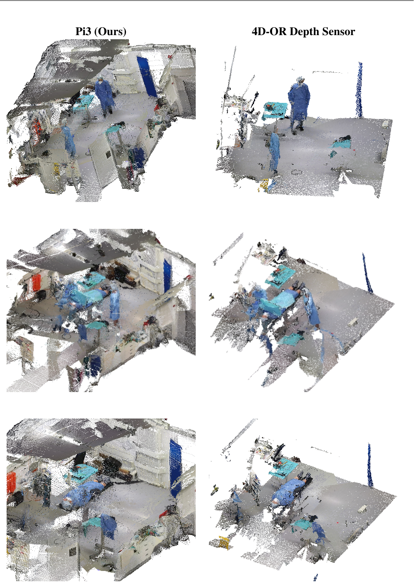
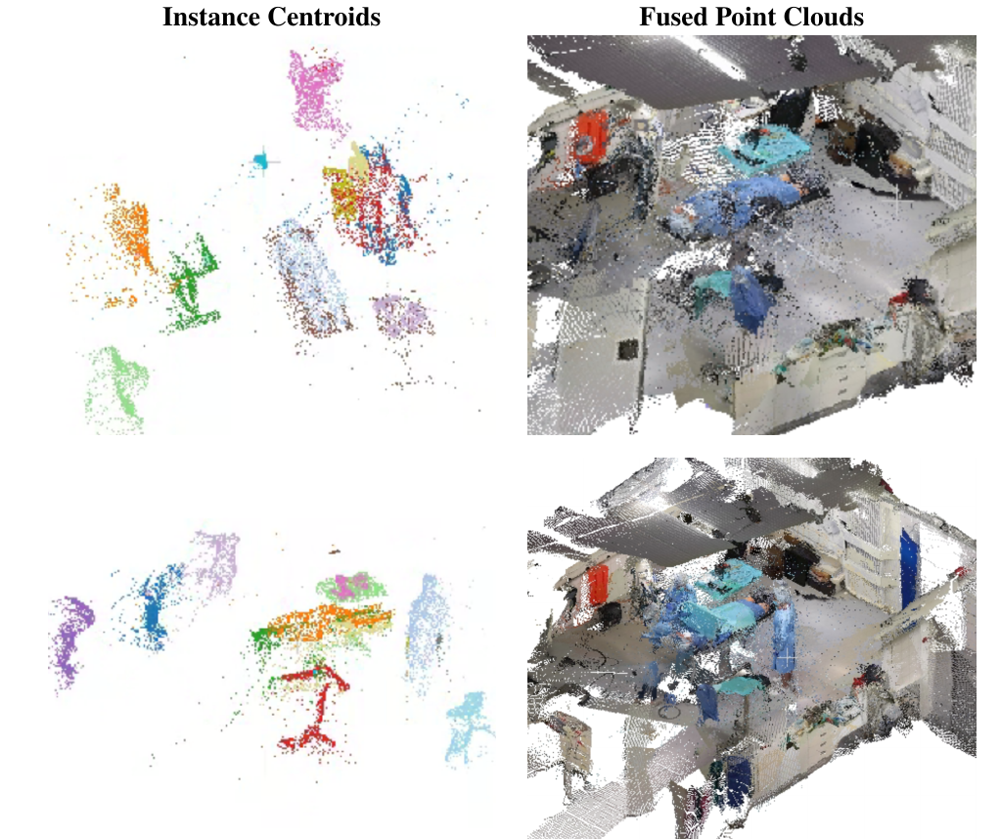

Overview
Abstract
Current surgical scene graph generation methods depend on dense multi-modal supervision and specialized hardware (synchronized RGB-D sensors, calibration rigs), making dataset construction expensive and restricting all existing benchmarks to simulated environments. We propose SAGE-OR, a feature-centric framework that replaces the traditional detect-then-reason paradigm with a decoupled representation-reasoning paradigm in which localization is derived from frozen foundation models, encoded implicitly in pre-computed features, and used without any localization supervision, while a lightweight graph transformer performs relational reasoning over cached features. We employ a semi-supervised formulation with general-purpose segmentation prompts to eliminate localization supervision while enabling unsupervised context augmentation through additional prompt-driven entities, such as hands, which are absent from annotations. General-purpose prompts induce near-perfect recall, while precision is delegated to downstream attention-based reasoning, enabling simple adaptation to new entities via prompt-level modification. This design enables a lightweight 15M-parameter graph transformer that trains in 1.4 hours and runs relational inference at ~1 ms per frame with peak memory under 2 GB, suitable for edge hardware used in the operating room; feature extraction runs offline as a separate caching stage (4.27 s per frame). On the 4D-OR benchmark, the core model achieves 76% F1, matching the fully supervised 4D-OR baseline while eliminating all localization annotations, and unsupervised hand augmentation raises this to 86% F1 — within 4 points of state-of-the-art methods requiring dense multi-modal supervision.
Method
SAGE-OR splits scene graph generation into a one-time feature-caching stage over frozen foundation models and a lightweight graph-reasoning stage — so localization never needs to be supervised, and the visual encoder can be swapped by regenerating only the cache.
1 · Decoupled feature caching

2 · Graph reasoning without localization supervision

Qualitative results
Open-vocabulary segmentation across 6 views

RGB-only 3D vs. depth sensors

Multi-view instance fusion

How it compares
Unlike prior OR scene-graph methods, SAGE-OR needs only RGB images and relationship/class labels — no synchronized RGB-D, 6-DoF poses, 3D boxes, or point clouds. It matches the fully-supervised 4D-OR baseline and, with unsupervised hand augmentation, comes within 4 points of the best fully-supervised methods while training a 4× smaller model.
| Method | Supervision | Params | Relation F1 |
|---|---|---|---|
| 4D-OR (baseline) | Full multi-modal | 84.8M | ~75% |
| S²Former-OR | Full multi-modal | 60.6M | 89% |
| SAGE-OR (core) | RGB + labels only | 15M | 76% |
| SAGE-OR (+ unsup. hands) | RGB + labels only | 15M | 86% |
Macro-averaged relation F1 on the 4D-OR test set. See the paper for full per-class results, the systematic visual-encoder comparison, and ablations.
Data & models
Inference and training need only the Checkpoint + Caches (~440 MB total). The 4D-OR data package is only for regenerating caches from scratch. See the repository README for setup and extraction steps.
DINOv3 weights are Meta-gated and only needed to regenerate caches — see the README.
Citation
@inproceedings{leblanc2026sageor,
title = {SAGE-OR: Semi-supervised Adaptive Scene Graph Generation for Operating Rooms},
author = {Leblanc, Brandon and Poullis, Charalambos},
booktitle = {Proceedings of the British Machine Vision Conference (BMVC)},
year = {2026}
}
Acknowledgments
SAGE-OR builds on Pi3, SAM 3, DINOv3, LABRAD-OR, and the 4D-OR dataset. We thank their authors for making their work publicly available.